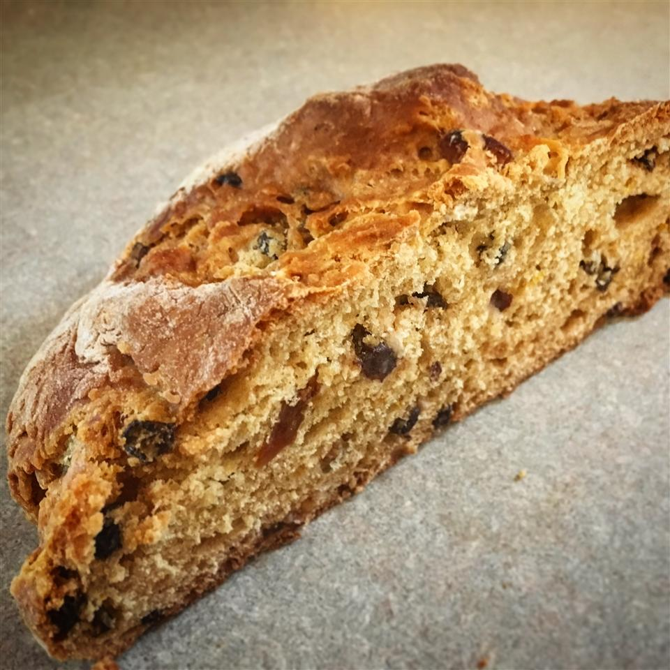

Irish Soda Bread

Description
St. Patrick's Day is right around the corner, and what better way to celebrate than with a loaf or two of Irish soda bread? If made correctly, this is one of the best quick breads (those leavened without yeast) you'll ever have. Subtly sweet, with a light, tender crumb, and not at all dry. You can use quick-cooking oats in place of rolled oats, if desired.
Ingredients
- 3 ¼ cups all-purpose flour
- ½ cup whole wheat flour
- ¼ cup rolled oats
- 1 ¼ teaspoons baking soda
- 1 teaspoon baking powder
- 1 ½ teaspoons salt
- ¼ cup cold unsalted butter, cut into small cubes
- 1 ¾ cups buttermilk
- 1 large egg
- 2 tablespoons honey, or more to taste
- 2 teaspoons grated orange zest
- 1 cup dried currants
- ⅓ cup golden raisins
Steps
- Preheat oven to 375 degrees F (190 degrees C). Line a baking sheet with parchment paper or silicone baking mat.
- Whisk all-purpose flour, whole wheat flour, oats, baking soda, baking powder, and salt together in a bowl. Cut butter into flour mixture using a pastry blender until mixture resembles coarse meal.
- Beat buttermilk, egg, honey, and orange zest together in a bowl. Pour buttermilk mixture, currants, and raisins into flour mixture; stir with a wooden spoon until a wet, sticky dough comes together.
- Turn dough out onto a well-floured work surface; press dough together into a soft ball of dough and cut into 2 pieces. Form each half into a smooth, round loaf. Transfer to prepared baking sheet and let rest for 15 minutes. Cut a 1/2-inch deep "X" into the top of each loaf with a serrated knife.
- Bake in the preheated oven until golden brown and fragrant, about 45 minutes. Transfer loaves to a wire rack to cool completely before slicing.